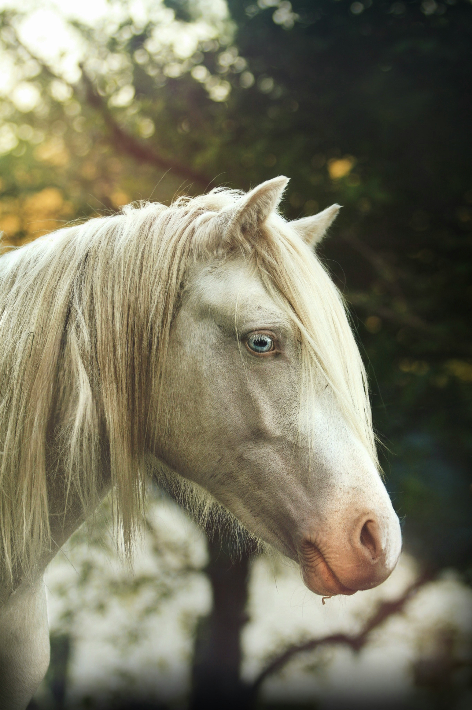
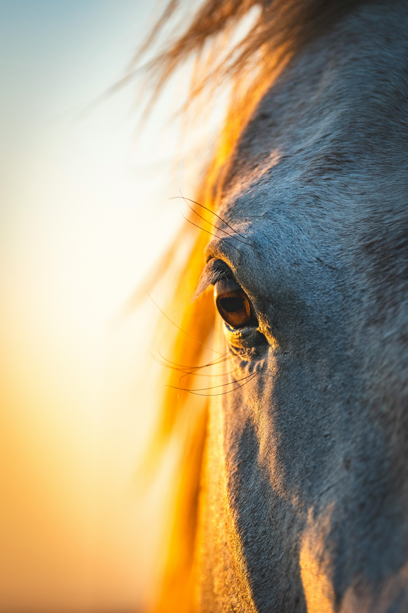
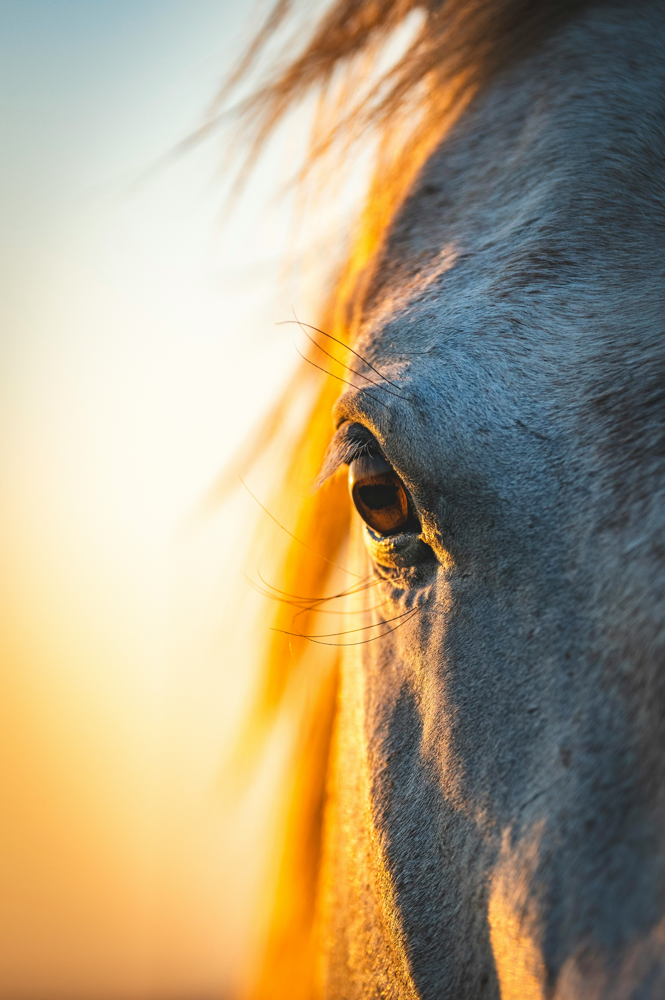
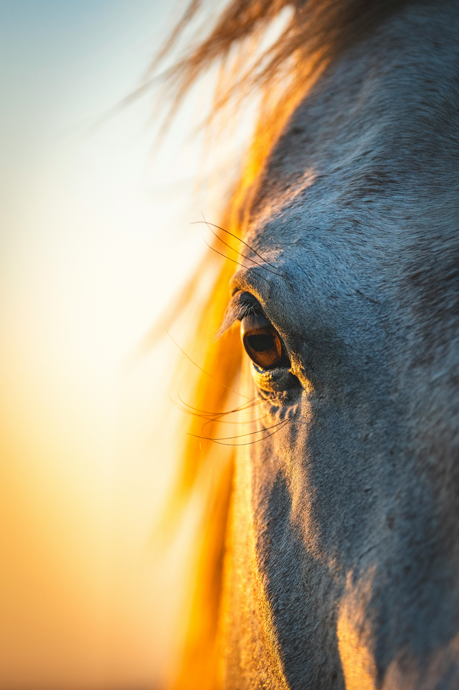

Welkom
Leuk dat je er bent!
Ik ben Janneke, een fotografe met een liefde voor dieren en voor het vastleggen van bijzondere momenten. Ik leg graag de unieke band vast tussen jou en je dier, of dat nu je paard of hond is. Mijn stijl is sfeervol en natuurlijk, met ruimte voor échte momenten.
Ik hoop jullie gauw te kunnen ontmoeten tijdens een foto reportage!
Een voorproefje van mijn werk

 

Bekijk de volledige gallerij
